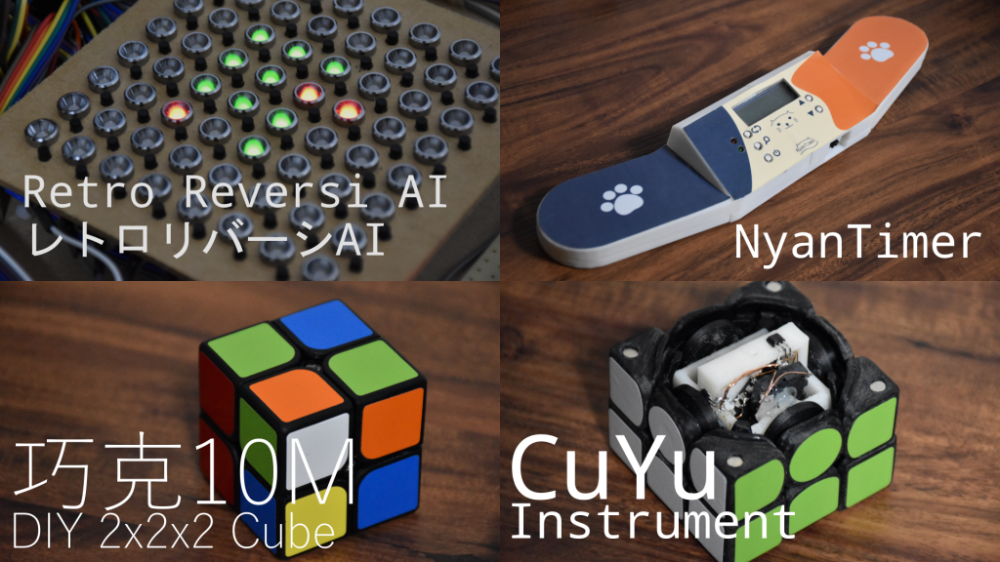

Home
Works
Exhibitions
Achievements
Contact
日本語
Maker Faire Tokyo 2021
Rubik's Cube and Making, Othello and Making (2021)
I exhibited Retro Othello AI, NyanTimer, QiaoKe, CuYu.
I had an oral presentation at Young Maker Challenge.

Details
Date: 2021/10/2-3
Place: Online
Exhibitor Page